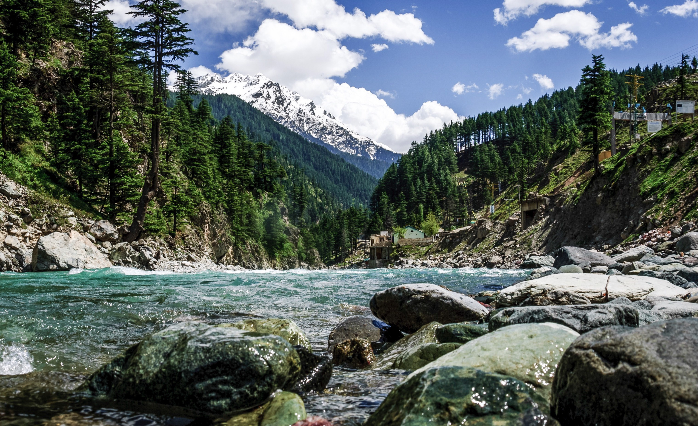

The Kaghan Valley is an alpine valley located in the Mansehra District of Khyber Pakhtunkhwa, Pakistan. The valley covers a distance of 155 kilometres across northern Pakistan, rising from its lowest elevation of 650 m (2,134 ft) to its highest point at the Babusar Pass around 4,170 m (13,690 ft). Landslides triggered by the devastating 2005 Kashmir earthquake destroyed many passes leading into the valley, though roads have since been largely rebuilt. The Kaghan is a highly popular tourist attraction.
Deosai National Park
The Deosai National Park is a high-altitude alpine plain (plateau) and national park in the Astore Valley, Northern Pakistan region of Gilgit-Baltistan. Deosai' means 'the Shadow of the Giant': Deosai Plains are situated at an average elevation of 4,114 metres (13,497 ft) above sea level and considered as the second highest plateaus in the world.
Gwadar
Gwadar is well known for its beautiful sunset and clean blue sea water this Gwadar beach is everything you need for a perfect picnic. Its population is about 33,000. Tourism in Gwadar is becoming a trend because of beautiful beaches, sunset points, Islands, golden deserts, Hingol national park, Sangar housing scheme which is located at the top of a hill covered with sea water from 3 sides, resorts on the marine drive. Gunz is very famous for its location including sunset points, golden desert and greenish water.
Kashmir
is the northwestern region of the Indian subcontinent. Until the mid-19th century, the term Kashmir geographically denoted only the valley between the Great Himalayas and the Pir Panjal mountain range. Then the name was used for the larger area of a princely state centered on the valley. In the first half of the first millennium, the Kashmir region became an important centre of Hinduism and later of Buddhism. Nature has lavishly endowed Kashmir with certain distinctive features that are paralleled by few alpine regions in the world. It is a land of snow clad mountains known for its extravagant natural beauty and contained major caravan routes in ancient times.
Swat

Swat is a valley and an administrative district in the Khyber Pakhtunkhwa Province, close to the Afghan-Pakistan border. The capital of Swat is Saidu Sharif, but the main town in the Swat valley is Mingora. It was a princely state until it was dissolved in 1969. The valley is almost entirely populated by ethnic Afghans/Pashtuns. The main language spoken in the valley is Pashto/Pakhto. With high mountains, green meadows, and clear lakes, it is a place of great natural beauty and is popular with tourists.
Skardu
Skardu is a town in the region of the same name in the Gilgit-Baltistan, Pakistan. Skardu is perched 2,438 metres above sea level in the backdrop of the great peaks of the Karakorams. Balti people are a mixture of Tibetan and Caucasian stock and speak Balti, an ancient form of Tibetan. Due to the similarity of its culture, lifestyle and architecture with Tibet, Baltistan is also known as the "Tibet-e-Khurd" (Little Tibet). It borders on the Chinese province of Xinjiang and Ladakh. The tourist season is from April to October. The maximum temperature is 27 C and minimum (October) 8 C. Apart from its incomparable cluster of mountain peaks and glaciers Baltistan's five valleys, - Shigar, Skardu, Khaplu, Rondu and Kharmang are noted for their luscious peaches, apricots, apples and pears.